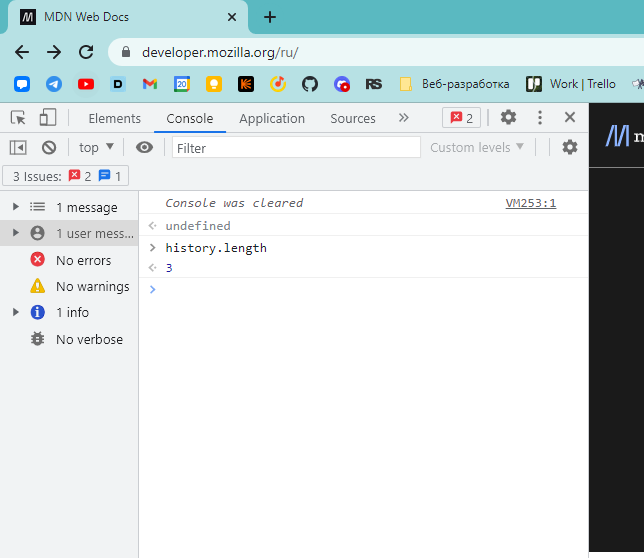

The History.back() method causes the browser to move back one page in the session history.
history.back()
The History.forward() method causes the browser to move forward one page in the session history.
history.forward()The History.go() method loads a specific page from the session history.
history.go()
history.go(delta)
history.go() === history.go(0)
history.go(1) === history.forward()
history.go(-1) === history.back()
history.go(2)history.go(2)history.go(-2)history.go(-2)history.lengthAn integer representing the number of elements in the session history, including the currently loaded page.
history.stateProperty that returns the serialized state of the active session history entry, deserialized into a JavaScript value.
Refer to the URLs that a user has visited in a browser. Each entry in the history stack corresponds to a specific URL and has an associated state object.
The History.replaceState() method modifies the current history entry, replacing it with the state object and URL passed in the method parameters.
replaceState(stateObj, unused)
replaceState(stateObj, unused, url)
const main = document.getElementById("main");
history.replaceState("the default page.", "");
main.innerText = `This is ${history.state}`;
The history.pushState() method adds an entry to the browser's session history stack.
pushState(stateObj, unused)
pushState(stateObj, unused, url)
const main = document.getElementById("main");
history.replaceState("the default page.", "");
main.innerText = `This is ${history.state}`;
const navBtns = [...document.getElementsByTagName("button")];
navBtns.forEach((navBtn) => {
navBtn.onclick = () => {
history.pushState(`Page ${navBtn.id}`, null, navBtn.id);
main.innerText = `This is Page ${navBtn.id}`;
};
});
The popstate event of the Window interface is fired when the active history entry changes while the user navigates the session history.
const main = document.getElementById("main");
history.replaceState("the default page.", "");
main.innerText = `This is ${history.state}`;
const navBtns = [...document.getElementsByTagName("button")];
navBtns.forEach((navBtn) => {
navBtn.onclick = () => {
history.pushState(`Page ${navBtn.id}`, null, navBtn.id);
main.innerText = `This is Page ${navBtn.id}`;
};
});
window.onpopstate = (event) => {
main.innerText = `This is ${event.state}`;
}
The scrollRestoration property of History interface allows web applications to explicitly set default scroll restoration behavior on history navigation.